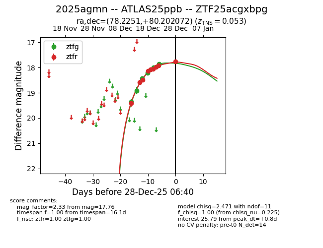
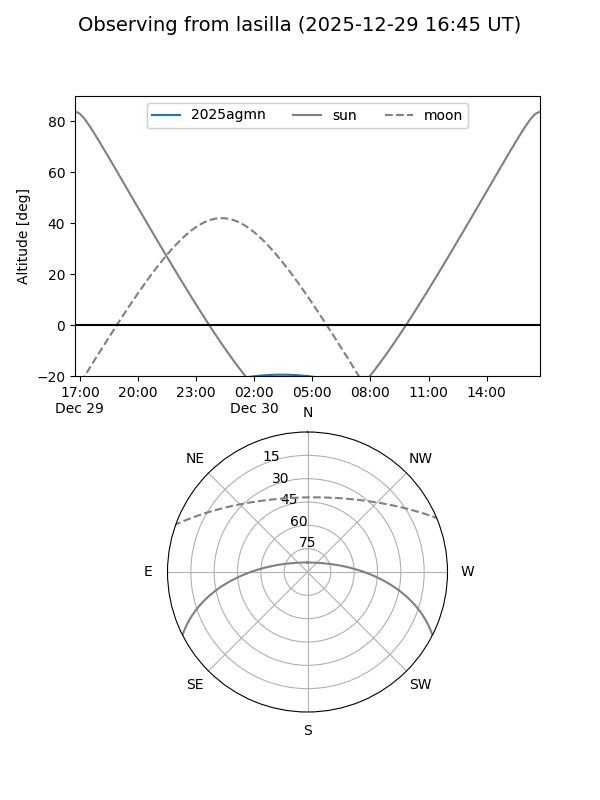
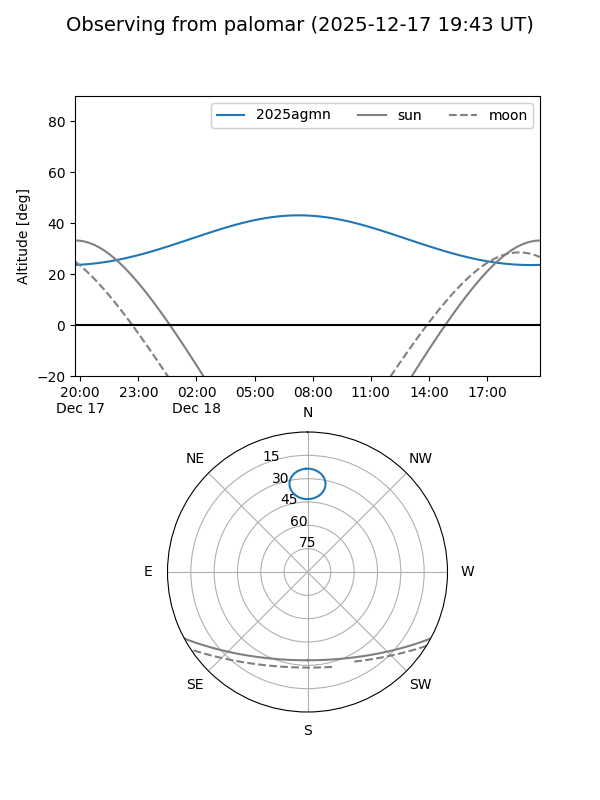
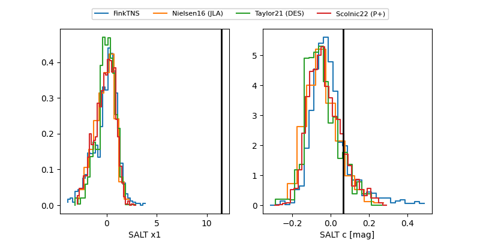

2025agmn
Target 2025agmn at 2025-12-31 17:00
Aliases and brokers:
FINK:
Lasair:
ALeRCE:
TNS:
YSE:
alt names
ZTF25acgxbpg (ztf,fink_ztf)
2025agmn (tns,yse)
ATLAS25ppb (atlas)
Coordinates:
equatorial (ra, dec) = 78.2254,+80.20205
equatorial (HMS+DMS) = 05:12:54.09,+80:12:07.38
galactic (l, b) = (132.5859,+22.71850)
Flags:
confirmed ia
Photometry:
last atlasc=17.89, atlaso=17.98, ztfg=17.84, ztfr=17.76
3 atlasc, 2 atlaso, 7 ztfg, 9 ztfr detections
Lightcurve

Visibility


Additional plots
